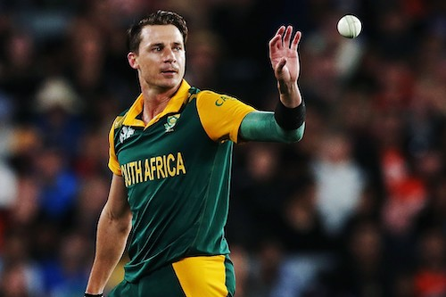
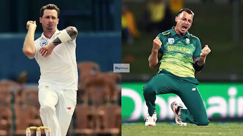
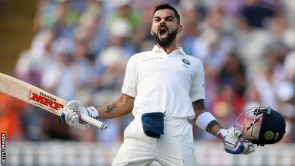
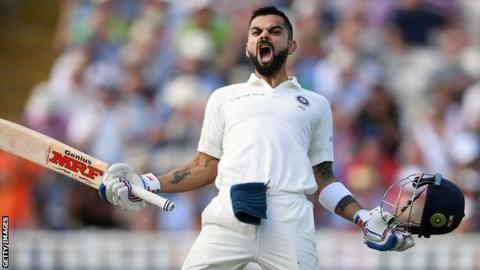

Virat Kohli born 5 November 1988 is an Indian international cricketer and former captain of the Indian national team. He plays for Delhi in domestic cricket and Royal Challengers Bangalore in the Indian Premier League as a right-handed batsman. He is often considered one of the best batsmen of his era and some critics believe him to be one of the best limited-overs batsmen in history. Between 2013 and 2022, he captained the India cricket team in more than 200 matches across all three formats.
Competition
Test
ODI
T20I
Matches
100
260
97
Runs scored
8,007
12,311
3,296
Batting average
50.35
58.07
51.50
Dale Steyn


Dale Willem Steyn born 27 June 1983 is a South African former professional cricketer who played for the South African Cricket Team. He is often regarded as one of the greatest fast bowlers of all time and the best Test bowler of his generation. During the 2007-08 season, Steyn achieved a tally of 78 wickets at an average of 16.24 and was subsequently rewarded with the ICC 2008 Test Cricketer of the Year Award.
 
Virat Kohli born 5 November 1988 is an Indian international cricketer and former captain of the Indian national team. He plays for Delhi in domestic cricket and Royal Challengers Bangalore in the Indian Premier League as a right-handed batsman. He is often considered one of the best batsmen of his era and some critics believe him to be one of the best limited-overs batsmen in history. Between 2013 and 2022, he captained the India cricket team in more than 200 matches across all three formats.

Virat Kohli born 5 November 1988 is an Indian international cricketer and former captain of the Indian national team. He plays for Delhi in domestic cricket and Royal Challengers Bangalore in the Indian Premier League as a right-handed batsman. He is often considered one of the best batsmen of his era and some critics believe him to be one of the best limited-overs batsmen in history. Between 2013 and 2022, he captained the India cricket team in more than 200 matches across all three formats.